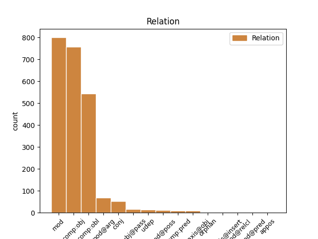
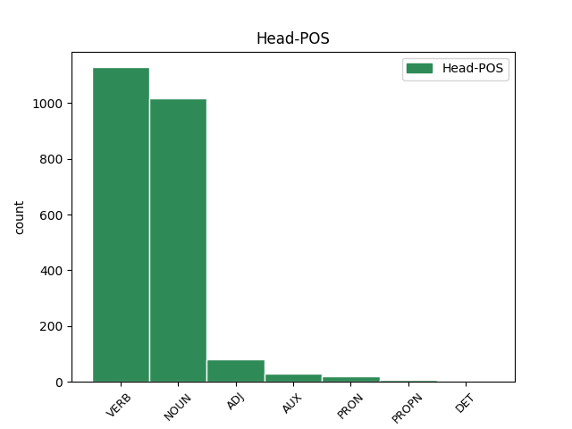
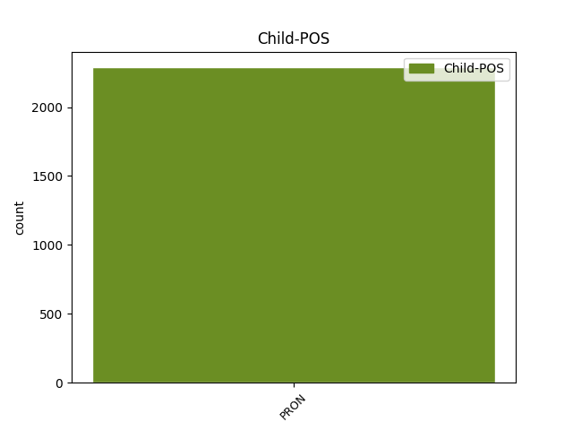

Distribution of features within this leaf



Agreement Rules sorted by frequency.
- When the dependent token is the modifer(mod) of the head token, and the dependent token is PRON.
1 Gliniarze _ _ _ _ 0 _ _ _
2 biegną _ _ _ _ 0 _ _ _
3 do _ _ _ _ 0 _ _ _
4 ognia _ _ _ _ 0 _ _ _
5 , _ _ _ _ 0 _ _ _
6 ale _ _ _ _ 0 _ _ _
7 jego on PRON ppron3:sg:gen:m1:ter:akc:npraep Animacy=Hum|Case=Gen|Gender=Masc|Number=Sing|Person=3|PrepCase=Npr|PronType=Prs|Variant=Long 8 mod _ _
8 ochroniarz ochroniarz NOUN subst:sg:nom:m1 Animacy=Hum|Case=Nom|Gender=Masc|Number=Sing 0 _ _ _
9 ciągle _ _ _ _ 0 _ _ _
10 go _ _ _ _ 0 _ _ _
11 pilnuje _ _ _ _ 0 _ _ _
12 . _ _ _ _ 0 _ _ _
1 George _ _ _ _ 0 _ _ _
2 sięgnął _ _ _ _ 0 _ _ _
3 do _ _ _ _ 0 _ _ _
4 kieszeni _ _ _ _ 0 _ _ _
5 , _ _ _ _ 0 _ _ _
6 wyjął _ _ _ _ 0 _ _ _
7 dokumenty _ _ _ _ 0 _ _ _
8 i _ _ _ _ 0 _ _ _
9 podał podać VERB praet:sg:m1:perf Animacy=Hum|Aspect=Perf|Gender=Masc|Mood=Ind|Number=Sing|Tense=Past|VerbForm=Fin|Voice=Act 0 _ _ _
10 je on PRON ppron3:pl:acc:m3:ter:akc:npraep Animacy=Inan|Case=Acc|Gender=Masc|Number=Plur|Person=3|PrepCase=Npr|PronType=Prs|Variant=Long 9 comp:obj _ _
11 gospodarzowi _ _ _ _ 0 _ _ _
12 . _ _ _ _ 0 _ _ _
1 Nie _ _ _ _ 0 _ _ _
2 dał dać VERB praet:sg:m1:perf Animacy=Hum|Aspect=Perf|Gender=Masc|Mood=Ind|Number=Sing|Tense=Past|VerbForm=Fin|Voice=Act 0 _ _ _
3 mu on PRON ppron3:sg:dat:m1:ter:nakc:npraep Animacy=Hum|Case=Dat|Gender=Masc|Number=Sing|Person=3|PrepCase=Npr|PronType=Prs|Variant=Short 2 comp:obl _ _
4 szansy _ _ _ _ 0 _ _ _
5 żeby _ _ _ _ 0 _ _ _
6 pojeździł _ _ _ _ 0 _ _ _
7 na _ _ _ _ 0 _ _ _
8 linii _ _ _ _ 0 _ _ _
9 . _ _ _ _ 0 _ _ _
1 Państwa _ _ _ _ 0 _ _ _
2 Członkowskie _ _ _ _ 0 _ _ _
3 rozdzielają _ _ _ _ 0 _ _ _
4 zezwolenia _ _ _ _ 0 _ _ _
5 między _ _ _ _ 0 _ _ _
6 przedsiębiorstwa _ _ _ _ 0 _ _ _
7 posiadające _ _ _ _ 0 _ _ _
8 siedziby _ _ _ _ 0 _ _ _
9 na _ _ _ _ 0 _ _ _
10 ich on PRON ppron3:pl:gen:n:ter:nakc:npraep Case=Gen|Gender=Neut|Number=Plur|Person=3|PrepCase=Npr|PronType=Prs|Variant=Short 11 mod@arg _ _
11 terytorium terytorium NOUN subst:sg:loc:n:ncol Case=Loc|Gender=Neut|Number=Sing 0 _ _ _
12 zgodnie _ _ _ _ 0 _ _ _
13 z _ _ _ _ 0 _ _ _
14 obiektywnymi _ _ _ _ 0 _ _ _
15 i _ _ _ _ 0 _ _ _
16 niedyskryminacyjnymi _ _ _ _ 0 _ _ _
17 kryteriami _ _ _ _ 0 _ _ _
18 . _ _ _ _ 0 _ _ _
1 Karciła _ _ _ _ 0 _ _ _
2 się _ _ _ _ 0 _ _ _
3 w _ _ _ _ 0 _ _ _
4 myślach _ _ _ _ 0 _ _ _
5 za _ _ _ _ 0 _ _ _
6 głupotę _ _ _ _ 0 _ _ _
7 i _ _ _ _ 0 _ _ _
8 egoizm _ _ _ _ 0 _ _ _
9 , _ _ _ _ 0 _ _ _
10 wiedząc _ _ _ _ 0 _ _ _
11 , _ _ _ _ 0 _ _ _
12 jak _ _ _ _ 0 _ _ _
13 wiele _ _ _ _ 0 _ _ _
14 Zosia Zosia PROPN subst:sg:nom:f Case=Nom|Gender=Fem|Number=Sing 0 _ _ _
15 i _ _ _ _ 0 _ _ _
16 ona on PRON ppron3:sg:nom:f:ter:akc:npraep Case=Nom|Gender=Fem|Number=Sing|Person=3|PrepCase=Npr|PronType=Prs|Variant=Long 14 conj _ _
17 sama _ _ _ _ 0 _ _ _
18 zawdzięczają _ _ _ _ 0 _ _ _
19 Marcie _ _ _ _ 0 _ _ _
20 . _ _ _ _ 0 _ _ _
1 Zostały zostać AUX praet:pl:f:perf Aspect=Perf|Gender=Fem|Mood=Ind|Number=Plur|Tense=Past|VerbForm=Fin|Voice=Act 0 _ _ _
2 one on PRON ppron3:pl:nom:f:ter:akc:npraep Case=Nom|Gender=Fem|Number=Plur|Person=3|PrepCase=Npr|PronType=Prs|Variant=Long 1 subj@pass _ _
3 przedstawione _ _ _ _ 0 _ _ _
4 w _ _ _ _ 0 _ _ _
5 nieformalnym _ _ _ _ 0 _ _ _
6 oświadczeniu _ _ _ _ 0 _ _ _
7 Rady _ _ _ _ 0 _ _ _
8 z _ _ _ _ 0 _ _ _
9 dnia _ _ _ _ 0 _ _ _
10 11 _ _ _ _ 0 _ _ _
11 lutego _ _ _ _ 0 _ _ _
12 . _ _ _ _ 0 _ _ _
1 Bez _ _ _ _ 0 _ _ _
2 niej _ _ _ _ 0 _ _ _
3 Był być AUX praet:sg:m1:imperf Animacy=Hum|Aspect=Imp|Gender=Masc|Mood=Ind|Number=Sing|Tense=Past|VerbForm=Fin|Voice=Act 0 _ _ _
4 by _ _ _ _ 0 _ _ _
5 m _ _ _ _ 0 _ _ _
6 . _ _ _ _ 0 _ _ _
7 . _ _ _ _ 0 _ _ _
8 . _ _ _ _ 0 _ _ _
9 nikim nikt PRON subst:sg:inst:m1 Animacy=Hum|Case=Ins|Gender=Masc|Number=Sing|PronType=Neg 3 comp:pred _ SpaceAfter=No
10 . _ _ _ _ 0 _ _ _
1 Pocisk _ _ _ _ 0 _ _ _
2 przeleciał _ _ _ _ 0 _ _ _
3 na _ _ _ _ 0 _ _ _
4 tyle _ _ _ _ 0 _ _ _
5 blisko _ _ _ _ 0 _ _ _
6 , _ _ _ _ 0 _ _ _
7 że _ _ _ _ 0 _ _ _
8 podmuch _ _ _ _ 0 _ _ _
9 zatrzasnął zatrzasnąć VERB praet:sg:m3:perf Animacy=Inan|Aspect=Perf|Gender=Masc|Mood=Ind|Number=Sing|Tense=Past|VerbForm=Fin|Voice=Act 0 _ _ _
10 mi ja PRON ppron12:sg:dat:m1:pri:nakc Animacy=Hum|Case=Dat|Gender=Masc|Number=Sing|Person=1|PronType=Prs|Variant=Short 9 udep _ _
11 klapę _ _ _ _ 0 _ _ _
12 nad _ _ _ _ 0 _ _ _
13 głową _ _ _ _ 0 _ _ _
14 . _ _ _ _ 0 _ _ _
1 Musicie _ _ _ _ 0 _ _ _
2 dać _ _ _ _ 0 _ _ _
3 sobie _ _ _ _ 0 _ _ _
4 czas _ _ _ _ 0 _ _ _
5 na _ _ _ _ 0 _ _ _
6 wysapanie _ _ _ _ 0 _ _ _
7 z _ _ _ _ 0 _ _ _
8 siebie _ _ _ _ 0 _ _ _
9 złości _ _ _ _ 0 _ _ _
10 , _ _ _ _ 0 _ _ _
11 na _ _ _ _ 0 _ _ _
12 powściekanie _ _ _ _ 0 _ _ _
13 się _ _ _ _ 0 _ _ _
14 na _ _ _ _ 0 _ _ _
15 drugą _ _ _ _ 0 _ _ _
16 stronę _ _ _ _ 0 _ _ _
17 i _ _ _ _ 0 _ _ _
18 wykrzyczenie wykrzyczeć NOUN ger:sg:acc:n:perf:aff Aspect=Perf|Case=Acc|Gender=Neut|Number=Sing|Polarity=Pos|VerbForm=Vnoun 0 _ _ _
19 : _ _ _ _ 0 _ _ _
20 " _ _ _ _ 0 _ _ _
21 To _ _ _ _ 0 _ _ _
22 wszystko wszystko PRON subst:sg:nom:n:ncol Case=Nom|Gender=Neut|Number=Sing|PronType=Tot 18 parataxis@obj _ _
23 twoja _ _ _ _ 0 _ _ _
24 wina _ _ _ _ 0 _ _ _
25 ! _ _ _ _ 0 _ _ _
26 " _ _ _ _ 0 _ _ _
27 . _ _ _ _ 0 _ _ _
1 Jako _ _ _ _ 0 _ _ _
2 lekarzowi _ _ _ _ 0 _ _ _
3 jest _ _ _ _ 0 _ _ _
4 mi _ _ _ _ 0 _ _ _
5 po _ _ _ _ 0 _ _ _
6 prostu _ _ _ _ 0 _ _ _
7 przykro _ _ _ _ 0 _ _ _
8 - _ _ _ _ 0 _ _ _
9 chociaż _ _ _ _ 0 _ _ _
10 przyznaję _ _ _ _ 0 _ _ _
11 , _ _ _ _ 0 _ _ _
12 że _ _ _ _ 0 _ _ _
13 również _ _ _ _ 0 _ _ _
14 zdarza _ _ _ _ 0 _ _ _
15 mi _ _ _ _ 0 _ _ _
16 się _ _ _ _ 0 _ _ _
17 czasami _ _ _ _ 0 _ _ _
18 zapalić _ _ _ _ 0 _ _ _
19 papierosa _ _ _ _ 0 _ _ _
20 - _ _ _ _ 0 _ _ _
21 że _ _ _ _ 0 _ _ _
22 niektórzy _ _ _ _ 0 _ _ _
23 senatorowie _ _ _ _ 0 _ _ _
24 wręcz _ _ _ _ 0 _ _ _
25 chwalą _ _ _ _ 0 _ _ _
26 się _ _ _ _ 0 _ _ _
27 wobec _ _ _ _ 0 _ _ _
28 wszystkich wszyscy PRON subst:pl:gen:m1:pt Animacy=Hum|Case=Gen|Gender=Masc|Number=Ptan|PronType=Tot 0 _ _ _
29 , _ _ _ _ 0 _ _ _
30 nas my PRON ppron12:pl:gen:m1:pri Animacy=Hum|Case=Gen|Gender=Masc|Number=Plur|Person=1|PronType=Prs 28 appos _ _
31 i _ _ _ _ 0 _ _ _
32 swoich _ _ _ _ 0 _ _ _
33 wyborców _ _ _ _ 0 _ _ _
34 , _ _ _ _ 0 _ _ _
35 tak _ _ _ _ 0 _ _ _
36 potężną _ _ _ _ 0 _ _ _
37 niewiedzą _ _ _ _ 0 _ _ _
38 . _ _ _ _ 0 _ _ _
1 Skórę _ _ _ _ 0 _ _ _
2 boomslanga _ _ _ _ 0 _ _ _
3 zabrała _ _ _ _ 0 _ _ _
4 Hermiona _ _ _ _ 0 _ _ _
5 na _ _ _ _ 0 _ _ _
6 ich on PRON ppron3:pl:gen:m1:ter:akc:npraep Animacy=Hum|Case=Gen|Gender=Masc|Number=Plur|Person=3|PrepCase=Npr|PronType=Prs|Variant=Long 8 mod@poss _ _
7 drugim _ _ _ _ 0 _ _ _
8 roku rok NOUN subst:sg:loc:m3 Animacy=Inan|Case=Loc|Gender=Masc|Number=Sing 0 _ _ _
9 - _ _ _ _ 0 _ _ _
10 potrzebowali _ _ _ _ 0 _ _ _
11 jej _ _ _ _ 0 _ _ _
12 do _ _ _ _ 0 _ _ _
13 Eliksiru _ _ _ _ 0 _ _ _
14 Wielosokowego _ _ _ _ 0 _ _ _
15 - _ _ _ _ 0 _ _ _
16 i _ _ _ _ 0 _ _ _
17 chociaż _ _ _ _ 0 _ _ _
18 Snape _ _ _ _ 0 _ _ _
19 podejrzewał _ _ _ _ 0 _ _ _
20 wtedy _ _ _ _ 0 _ _ _
21 Harrego _ _ _ _ 0 _ _ _
22 , _ _ _ _ 0 _ _ _
23 nigdy _ _ _ _ 0 _ _ _
24 nie _ _ _ _ 0 _ _ _
25 był _ _ _ _ 0 _ _ _
26 w _ _ _ _ 0 _ _ _
27 stanie _ _ _ _ 0 _ _ _
28 tego _ _ _ _ 0 _ _ _
29 udowodnić _ _ _ _ 0 _ _ _
30 . _ _ _ _ 0 _ _ _
Disagree Examples:
1 Trzy _ _ _ _ 0 _ _ _
2 kobiety _ _ _ _ 0 _ _ _
3 ubrane _ _ _ _ 0 _ _ _
4 w _ _ _ _ 0 _ _ _
5 długie _ _ _ _ 0 _ _ _
6 szaty _ _ _ _ 0 _ _ _
7 tańczą _ _ _ _ 0 _ _ _
8 obok _ _ _ _ 0 _ _ _
9 wiszącej _ _ _ _ 0 _ _ _
10 za _ _ _ _ 0 _ _ _
11 ich on PRON ppron3:pl:gen:f:ter:akc:npraep Case=Gen|Gender=Fem|Number=Plur|Person=3|PrepCase=Npr|PronType=Prs|Variant=Long 12 mod _ _
12 plecami plecy NOUN subst:pl:inst:n:pt Case=Ins|Gender=Neut|Number=Ptan 0 _ _ _
13 flagi _ _ _ _ 0 _ _ _
14 . _ _ _ _ 0 _ _ _
1 Chłopiec _ _ _ _ 0 _ _ _
2 leży _ _ _ _ 0 _ _ _
3 na _ _ _ _ 0 _ _ _
4 brzuchu _ _ _ _ 0 _ _ _
5 na _ _ _ _ 0 _ _ _
6 trawie _ _ _ _ 0 _ _ _
7 , _ _ _ _ 0 _ _ _
8 a _ _ _ _ 0 _ _ _
9 między _ _ _ _ 0 _ _ _
10 jego on PRON ppron3:sg:gen:m1:ter:akc:npraep Animacy=Hum|Case=Gen|Gender=Masc|Number=Sing|Person=3|PrepCase=Npr|PronType=Prs|Variant=Long 11 mod _ _
11 nogami noga NOUN subst:pl:inst:f Case=Ins|Gender=Fem|Number=Plur 0 _ _ _
12 leży _ _ _ _ 0 _ _ _
13 piłka _ _ _ _ 0 _ _ _
14 . _ _ _ _ 0 _ _ _
1 Jeden _ _ _ _ 0 _ _ _
2 elegancko _ _ _ _ 0 _ _ _
3 ubrany _ _ _ _ 0 _ _ _
4 chłopiec _ _ _ _ 0 _ _ _
5 siedzi _ _ _ _ 0 _ _ _
6 na _ _ _ _ 0 _ _ _
7 podwyższeniu _ _ _ _ 0 _ _ _
8 , _ _ _ _ 0 _ _ _
9 a _ _ _ _ 0 _ _ _
10 drugi _ _ _ _ 0 _ _ _
11 chłopiec _ _ _ _ 0 _ _ _
12 przewraca _ _ _ _ 0 _ _ _
13 się _ _ _ _ 0 _ _ _
14 u _ _ _ _ 0 _ _ _
15 jego on PRON ppron3:sg:gen:m1:ter:akc:npraep Animacy=Hum|Case=Gen|Gender=Masc|Number=Sing|Person=3|PrepCase=Npr|PronType=Prs|Variant=Long 16 mod _ _
16 stóp stopa NOUN subst:pl:gen:f Case=Gen|Gender=Fem|Number=Plur 0 _ _ _
17 . _ _ _ _ 0 _ _ _
1 Kobieta _ _ _ _ 0 _ _ _
2 w _ _ _ _ 0 _ _ _
3 sukni _ _ _ _ 0 _ _ _
4 ślubnej _ _ _ _ 0 _ _ _
5 , _ _ _ _ 0 _ _ _
6 trzymająca _ _ _ _ 0 _ _ _
7 w _ _ _ _ 0 _ _ _
8 ręce _ _ _ _ 0 _ _ _
9 bukiet _ _ _ _ 0 _ _ _
10 różowych _ _ _ _ 0 _ _ _
11 kwiatów _ _ _ _ 0 _ _ _
12 , _ _ _ _ 0 _ _ _
13 idzie _ _ _ _ 0 _ _ _
14 przez _ _ _ _ 0 _ _ _
15 kościół _ _ _ _ 0 _ _ _
16 wraz _ _ _ _ 0 _ _ _
17 z _ _ _ _ 0 _ _ _
18 towarzyszącym towarzyszyć ADJ pact:sg:inst:m1:imperf:aff Animacy=Hum|Aspect=Imp|Case=Ins|Gender=Masc|Number=Sing|Polarity=Pos|VerbForm=Part|Voice=Act 0 _ _ _
19 jej on PRON ppron3:sg:dat:f:ter:akc:npraep Case=Dat|Gender=Fem|Number=Sing|Person=3|PrepCase=Npr|PronType=Prs|Variant=Long 18 comp:obl _ _
20 mężczyzną _ _ _ _ 0 _ _ _
21 . _ _ _ _ 0 _ _ _
1 Człowiek _ _ _ _ 0 _ _ _
2 w _ _ _ _ 0 _ _ _
3 kasku _ _ _ _ 0 _ _ _
4 trzyma _ _ _ _ 0 _ _ _
5 linki _ _ _ _ 0 _ _ _
6 położonej _ _ _ _ 0 _ _ _
7 na _ _ _ _ 0 _ _ _
8 ziemi _ _ _ _ 0 _ _ _
9 paralotni _ _ _ _ 0 _ _ _
10 , _ _ _ _ 0 _ _ _
11 a _ _ _ _ 0 _ _ _
12 druga _ _ _ _ 0 _ _ _
13 osoba _ _ _ _ 0 _ _ _
14 przytrzymuje _ _ _ _ 0 _ _ _
15 jej on PRON ppron3:sg:gen:f:ter:akc:npraep Case=Gen|Gender=Fem|Number=Sing|Person=3|PrepCase=Npr|PronType=Prs|Variant=Long 16 mod _ _
16 skrzydło skrzydło NOUN subst:sg:nom:n:ncol Case=Nom|Gender=Neut|Number=Sing 0 _ _ _
17 . _ _ _ _ 0 _ _ _